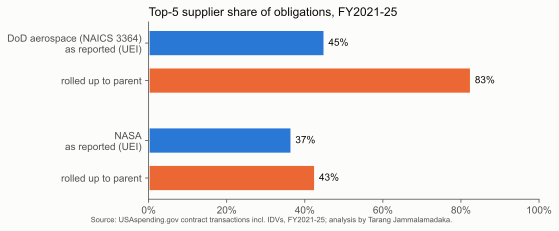
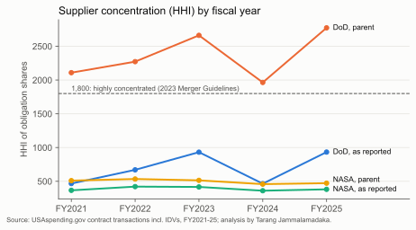
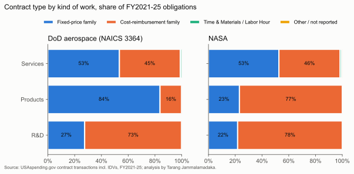
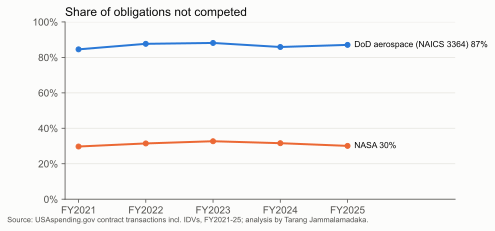

Who supplies U.S. military and NASA aerospace?
Supplier concentration, contract type and competition on 874,769 real federal contract transactions, FY2021 to FY2025, from USAspending.gov. By Tarang Jammalamadaka.
One-page memo (PDF)Excel spend cube Code and method
1. Supplier records hide half the concentration
As reported, DoD's largest aerospace supplier record holds 21% of obligations and the top five hold 45% (HHI 671). Rolled up to parent companies, Lockheed Martin holds 43%, the top five hold 82%, and HHI is 2,360. For a sense of scale only, the 2023 Merger Guidelines treat a market above 1,800 as highly concentrated; this is one buyer's spend, not a market. NASA's supplier base is far flatter: top five 44%, HHI 489.


DoD aerospace: top parent companies
| Parent company | FY21-25 | Share | Fixed-price | Not competed | Records |
|---|---|---|---|---|---|
| Lockheed Martin | $214.2B | 43% | 79% | 95% | 47 |
| Boeing | $80.9B | 16% | 72% | 79% | 37 |
| RTX | $70.6B | 14% | 78% | 97% | 85 |
| Northrop Grumman | $30.4B | 6% | 48% | 90% | 61 |
| GE Aerospace | $14.3B | 3% | 82% | 81% | 18 |
| L3Harris | $9.9B | 2% | 77% | 82% | 38 |
| General Atomics | $7.7B | 2% | 49% | 100% | 4 |
| Bell Boeing JV (Textron + Boeing) | $7.2B | 1% | 86% | 100% | 1 |
NASA: top parent companies
| Parent company | FY21-25 | Share | Fixed-price | Not competed | Records |
|---|---|---|---|---|---|
| Caltech (JPL) | $12.3B | 12% | 0% | 98% | 2 |
| SpaceX | $10.1B | 10% | 100% | 0% | 2 |
| Boeing | $8.1B | 8% | 1% | 57% | 25 |
| Amentum | $7.1B | 7% | 13% | 0% | 9 |
| Lockheed Martin | $6.7B | 7% | 4% | 44% | 16 |
| Northrop Grumman | $6.0B | 6% | 59% | 33% | 33 |
| KBR | $3.7B | 4% | 0% | 0% | 5 |
| L3Harris | $2.8B | 3% | 8% | 77% | 19 |
2. Contract type follows the kind of work
DoD puts 77% of aerospace dollars on fixed-price contracts (46% on firm fixed price alone) but only 27% of R&D; 73% of R&D is cost-reimbursement. NASA runs the other way: 66% cost-type overall. Time and materials is 0.1% at DoD and 0.4% at NASA. Fixed price puts cost overruns on the supplier, which is why development work stays mostly cost-type. One example: in its annual report (10-K) for 2025, Boeing reports $5,013 million of losses in 2024 on its five major fixed-price development programs.

3. Most DoD aerospace dollars are not competed
87% of DoD aerospace obligations were not competed, and 78% of those cite only one source (FAR 6.302-1). At NASA, 31% was not competed.

Method
Every NASA contract transaction and every DoD transaction in NAICS 3364 (aerospace product and parts manufacturing), FY2021 to FY2025, pulled from the USAspending API with IDV obligations included (they are 23.9% of NASA dollars). Each agency-year sums to USAspending's own aggregate to the cent. 11,227 supplier records were rolled to parent companies with a 159-row crosswalk sourced to 10-K subsidiary lists, acquisition announcements and NSF's FFRDC list, covering 93% of DoD and 68% of NASA dollars. Each supplier record gets one parent, today's owner, applied to every year. A product-code definition of DoD aerospace raises the FY2025 top-five record share from 52% to 60%, so NAICS 3364 is the conservative boundary. HHI here measures one buyer's spend, not a market.